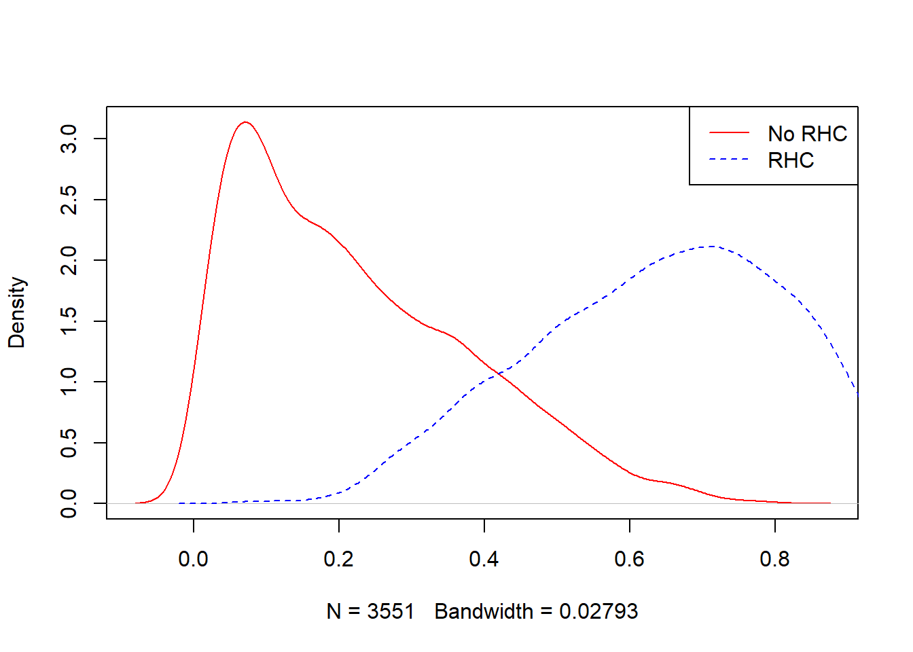
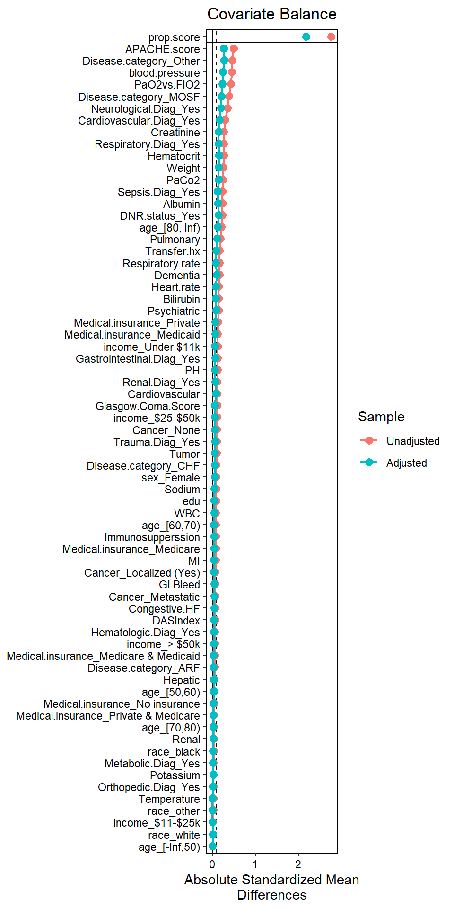

Chapter 5 IPTW using ML
Similar to G-computation, we will try to use machine learning methods, particularly Superlearner in estimating IPW estimates
# Read the data saved at the last chapter
ObsData <- readRDS(file = "data/rhcAnalytic.RDS")
baselinevars <- names(dplyr::select(ObsData, !c(A,Y)))
ps.formula <- as.formula(paste("A ~",
paste(baselinevars,
collapse = "+")))5.1 IPTW Steps from SL
Modelling Steps:
We will still follow the same steps | | | |-|-| |Step 1| exposure modelling: \(PS = Prob(A=1|L)\)| |Step 2| Convert \(PS\) to \(IPW\) = \(\frac{A}{PS} + \frac{1-A}{1-PS}\)| |Step 3| Assess balance in weighted sample and overlap (\(PS\) and \(L\))| |Step 4| outcome modelling: \(Prob(Y=1|A=1)\) to obtain treatment effect estimate |
5.2 Step 1: exposure modelling
This is the exposure model that we decided on:
ps.formula## A ~ Disease.category + Cancer + Cardiovascular + Congestive.HF +
## Dementia + Psychiatric + Pulmonary + Renal + Hepatic + GI.Bleed +
## Tumor + Immunosupperssion + Transfer.hx + MI + age + sex +
## edu + DASIndex + APACHE.score + Glasgow.Coma.Score + blood.pressure +
## WBC + Heart.rate + Respiratory.rate + Temperature + PaO2vs.FIO2 +
## Albumin + Hematocrit + Bilirubin + Creatinine + Sodium +
## Potassium + PaCo2 + PH + Weight + DNR.status + Medical.insurance +
## Respiratory.Diag + Cardiovascular.Diag + Neurological.Diag +
## Gastrointestinal.Diag + Renal.Diag + Metabolic.Diag + Hematologic.Diag +
## Sepsis.Diag + Trauma.Diag + Orthopedic.Diag + race + incomeFit SuperLearner to estimate propensity scores. We again use the same candidate learners:
- linear model
- LASSO
- gradient boosting
require(SuperLearner)
ObsData.noYA <- dplyr::select(ObsData, !c(Y,A))
PS.fit.SL <- SuperLearner(Y=ObsData$A,
X=ObsData.noYA,
cvControl = list(V = 3),
SL.library=c("SL.glm", "SL.glmnet", "SL.xgboost"),
method="method.NNLS",
family="binomial")Here, method.AUC is also possible to use instead of method.NNLS for binary response. We could use cvControl = list(V = 3, stratifyCV = TRUE) to make the splits be stratified by the binary response.
Obtain the propesnity score (PS) values from the fit
all.pred <- predict(PS.fit.SL, type = "response")
ObsData$PS.SL <- all.pred$predCheck summaries:
summary(ObsData$PS.SL)## V1
## Min. :0.002981
## 1st Qu.:0.151578
## Median :0.347286
## Mean :0.380833
## 3rd Qu.:0.591373
## Max. :0.971231tapply(ObsData$PS.SL, ObsData$A, summary)## $`0`
## Min. 1st Qu. Median Mean 3rd Qu. Max.
## 0.002981 0.091153 0.192876 0.224573 0.332211 0.788300
##
## $`1`
## Min. 1st Qu. Median Mean 3rd Qu. Max.
## 0.0815 0.5107 0.6510 0.6349 0.7663 0.9712plot(density(ObsData$PS.SL[ObsData$A==0]),
col = "red", main = "")
lines(density(ObsData$PS.SL[ObsData$A==1]),
col = "blue", lty = 2)
legend("topright", c("No RHC","RHC"),
col = c("red", "blue"), lty=1:2)
5.3 Step 2: Convert PS to IPW
- Convert PS from SL to IPW using the formula (again, ATE formula).
ObsData$IPW.SL <- ObsData$A/ObsData$PS.SL + (1-ObsData$A)/(1-ObsData$PS.SL)
summary(ObsData$IPW.SL)## V1
## Min. : 1.003
## 1st Qu.: 1.149
## Median : 1.339
## Mean : 1.508
## 3rd Qu.: 1.668
## Max. :12.271Output from pre-packged software packages to do the same (very similar estimates):
require(WeightIt)
W.out <- weightit(ps.formula,
data = ObsData,
estimand = "ATE",
method = "super",
SL.library = c("SL.glm",
"SL.glmnet",
"SL.xgboost"))
summary(W.out$weights)## Min. 1st Qu. Median Mean 3rd Qu. Max.
## 1.002 1.141 1.321 1.471 1.626 12.435Alternatively, you can use the previously estimated PS
W.out2 <- weightit(ps.formula,
data = ObsData,
estimand = "ATE",
ps = ObsData$PS.SL)
summary(W.out2$weights)## Min. 1st Qu. Median Mean 3rd Qu. Max.
## 1.003 1.149 1.339 1.508 1.668 12.2715.4 Step 3: Balance checking
- We first check balance numerically for SMD = 0.1 as threshold for balance.
bal.tab(W.out, un = TRUE,
thresholds = c(m = .1))## Call
## weightit(formula = ps.formula, data = ObsData, method = "super",
## estimand = "ATE", SL.library = c("SL.glm", "SL.glmnet", "SL.xgboost"))
##
## Balance Measures
## Type Diff.Un Diff.Adj
## prop.score Distance 2.7115 2.1229
## Disease.category_ARF Binary -0.0290 -0.0094
## Disease.category_CHF Binary 0.0261 0.0153
## Disease.category_Other Binary -0.1737 -0.1013
## Disease.category_MOSF Binary 0.1766 0.0954
## Cancer_None Binary 0.0439 0.0249
## Cancer_Localized (Yes) Binary -0.0267 -0.0120
## Cancer_Metastatic Binary -0.0172 -0.0129
## Cardiovascular Binary 0.0445 0.0283
## Congestive.HF Binary 0.0268 0.0161
## Dementia Binary -0.0472 -0.0296
## Psychiatric Binary -0.0348 -0.0204
## Pulmonary Binary -0.0737 -0.0430
## Renal Binary 0.0066 0.0046
## Hepatic Binary -0.0124 -0.0082
## GI.Bleed Binary -0.0122 -0.0081
## Tumor Binary -0.0423 -0.0230
## Immunosupperssion Binary 0.0358 0.0200
## Transfer.hx Binary 0.0554 0.0281
## MI Binary 0.0139 0.0075
## age_[-Inf,50) Binary -0.0017 -0.0014
## age_[50,60) Binary 0.0161 0.0130
## age_[60,70) Binary 0.0355 0.0167
## age_[70,80) Binary 0.0144 0.0112
## age_[80, Inf) Binary -0.0643 -0.0396
## sex_Female Binary -0.0462 -0.0283
## edu Contin. 0.0914 0.0512
## DASIndex Contin. 0.0626 0.0378
## APACHE.score Contin. 0.5014 0.2641
## Glasgow.Coma.Score Contin. -0.1098 -0.0603
## blood.pressure Contin. -0.4551 -0.2406
## WBC Contin. 0.0836 0.0503
## Heart.rate Contin. 0.1469 0.0819
## Respiratory.rate Contin. -0.1655 -0.0829
## Temperature Contin. -0.0214 -0.0060
## PaO2vs.FIO2 Contin. -0.4332 -0.2339
## Albumin Contin. -0.2299 -0.1292
## Hematocrit Contin. -0.2693 -0.1590
## Bilirubin Contin. 0.1446 0.0771
## Creatinine Contin. 0.2696 0.1425
## Sodium Contin. -0.0922 -0.0513
## Potassium Contin. -0.0271 -0.0284
## PaCo2 Contin. -0.2486 -0.1483
## PH Contin. -0.1198 -0.0533
## Weight Contin. 0.2557 0.1418
## DNR.status_Yes Binary -0.0696 -0.0426
## Medical.insurance_Medicaid Binary -0.0395 -0.0224
## Medical.insurance_Medicare Binary -0.0327 -0.0184
## Medical.insurance_Medicare & Medicaid Binary -0.0144 -0.0065
## Medical.insurance_No insurance Binary 0.0099 0.0062
## Medical.insurance_Private Binary 0.0624 0.0333
## Medical.insurance_Private & Medicare Binary 0.0143 0.0077
## Respiratory.Diag_Yes Binary -0.1277 -0.0673
## Cardiovascular.Diag_Yes Binary 0.1395 0.0760
## Neurological.Diag_Yes Binary -0.1079 -0.0592
## Gastrointestinal.Diag_Yes Binary 0.0453 0.0249
## Renal.Diag_Yes Binary 0.0264 0.0148
## Metabolic.Diag_Yes Binary -0.0059 -0.0027
## Hematologic.Diag_Yes Binary -0.0146 -0.0084
## Sepsis.Diag_Yes Binary 0.0912 0.0485
## Trauma.Diag_Yes Binary 0.0105 0.0064
## Orthopedic.Diag_Yes Binary 0.0010 0.0007
## race_white Binary 0.0063 0.0034
## race_black Binary -0.0114 -0.0043
## race_other Binary 0.0050 0.0009
## income_$11-$25k Binary 0.0062 0.0007
## income_$25-$50k Binary 0.0391 0.0211
## income_> $50k Binary 0.0165 0.0078
## income_Under $11k Binary -0.0618 -0.0296
## M.Threshold
## prop.score
## Disease.category_ARF Balanced, <0.1
## Disease.category_CHF Balanced, <0.1
## Disease.category_Other Not Balanced, >0.1
## Disease.category_MOSF Balanced, <0.1
## Cancer_None Balanced, <0.1
## Cancer_Localized (Yes) Balanced, <0.1
## Cancer_Metastatic Balanced, <0.1
## Cardiovascular Balanced, <0.1
## Congestive.HF Balanced, <0.1
## Dementia Balanced, <0.1
## Psychiatric Balanced, <0.1
## Pulmonary Balanced, <0.1
## Renal Balanced, <0.1
## Hepatic Balanced, <0.1
## GI.Bleed Balanced, <0.1
## Tumor Balanced, <0.1
## Immunosupperssion Balanced, <0.1
## Transfer.hx Balanced, <0.1
## MI Balanced, <0.1
## age_[-Inf,50) Balanced, <0.1
## age_[50,60) Balanced, <0.1
## age_[60,70) Balanced, <0.1
## age_[70,80) Balanced, <0.1
## age_[80, Inf) Balanced, <0.1
## sex_Female Balanced, <0.1
## edu Balanced, <0.1
## DASIndex Balanced, <0.1
## APACHE.score Not Balanced, >0.1
## Glasgow.Coma.Score Balanced, <0.1
## blood.pressure Not Balanced, >0.1
## WBC Balanced, <0.1
## Heart.rate Balanced, <0.1
## Respiratory.rate Balanced, <0.1
## Temperature Balanced, <0.1
## PaO2vs.FIO2 Not Balanced, >0.1
## Albumin Not Balanced, >0.1
## Hematocrit Not Balanced, >0.1
## Bilirubin Balanced, <0.1
## Creatinine Not Balanced, >0.1
## Sodium Balanced, <0.1
## Potassium Balanced, <0.1
## PaCo2 Not Balanced, >0.1
## PH Balanced, <0.1
## Weight Not Balanced, >0.1
## DNR.status_Yes Balanced, <0.1
## Medical.insurance_Medicaid Balanced, <0.1
## Medical.insurance_Medicare Balanced, <0.1
## Medical.insurance_Medicare & Medicaid Balanced, <0.1
## Medical.insurance_No insurance Balanced, <0.1
## Medical.insurance_Private Balanced, <0.1
## Medical.insurance_Private & Medicare Balanced, <0.1
## Respiratory.Diag_Yes Balanced, <0.1
## Cardiovascular.Diag_Yes Balanced, <0.1
## Neurological.Diag_Yes Balanced, <0.1
## Gastrointestinal.Diag_Yes Balanced, <0.1
## Renal.Diag_Yes Balanced, <0.1
## Metabolic.Diag_Yes Balanced, <0.1
## Hematologic.Diag_Yes Balanced, <0.1
## Sepsis.Diag_Yes Balanced, <0.1
## Trauma.Diag_Yes Balanced, <0.1
## Orthopedic.Diag_Yes Balanced, <0.1
## race_white Balanced, <0.1
## race_black Balanced, <0.1
## race_other Balanced, <0.1
## income_$11-$25k Balanced, <0.1
## income_$25-$50k Balanced, <0.1
## income_> $50k Balanced, <0.1
## income_Under $11k Balanced, <0.1
##
## Balance tally for mean differences
## count
## Balanced, <0.1 59
## Not Balanced, >0.1 9
##
## Variable with the greatest mean difference
## Variable Diff.Adj M.Threshold
## APACHE.score 0.2641 Not Balanced, >0.1
##
## Effective sample sizes
## Control Treated
## Unadjusted 3551. 2184.
## Adjusted 3316.37 1896.5- And also via plot
require(cobalt)
love.plot(W.out, binary = "std",
thresholds = c(m = .1),
abs = TRUE,
var.order = "unadjusted",
line = TRUE)
5.5 Step 4: outcome modelling
Estimate the effect of treatment on outcomes
out.formula <- as.formula(Y ~ A)
out.fit <- glm(out.formula,
data = ObsData,
weights = IPW.SL)
publish(out.fit)## Variable Units Coefficient CI.95 p-value
## (Intercept) 20.21 [19.31;21.12] < 1e-04
## A 4.24 [2.88;5.61] < 1e-04Also check the output when we used the weights from the package
out.formula <- as.formula(Y ~ A)
out.fit <- glm(out.formula,
data = ObsData,
weights = W.out$weights)
publish(out.fit)## Variable Units Coefficient CI.95 p-value
## (Intercept) 20.15 [19.25;21.05] < 1e-04
## A 4.34 [2.97;5.71] < 1e-04saveRDS(out.fit, file = "data/ipwsl.RDS")